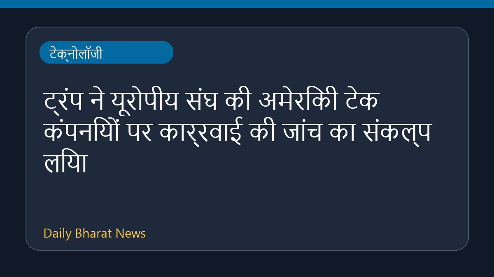

ट्रंप ने यूरोपीय संघ की अमेरिकी टेक कंपनियों पर कार्रवाई की जांच का संकल्प लिया

अमेरिका के राष्ट्रपति ने यूरोपीय संघ द्वारा गूगल, एप्पल, मेटा और अमेजन जैसी अमेरिकी तकनीकी कंपनियों पर लगाए गए भारी जुर्माने की कड़ी आलोचना की है। उन्होंने कहा कि इन सभी भुगतानों और जुर्माने को पूरी तरह से रद्द किया जाना चाहिए। इस बयान के बाद अमेरिकी प्रशासन ने इस पूरे मामले की औपचारिक जांच कराने का संकल्प लिया है, जिससे वैश्विक तकनीकी विनियमन और अंतरराष्ट्रीय व्यापार नीतियों पर नए सिरे से बहस छिड़ने की संभावना जताई जा रही है।
मूल स्रोत: BBC Technology
Trump vows to investigate EU over fining of US tech companies ↗
Trump vows to investigate EU over fining of US tech companies ↗